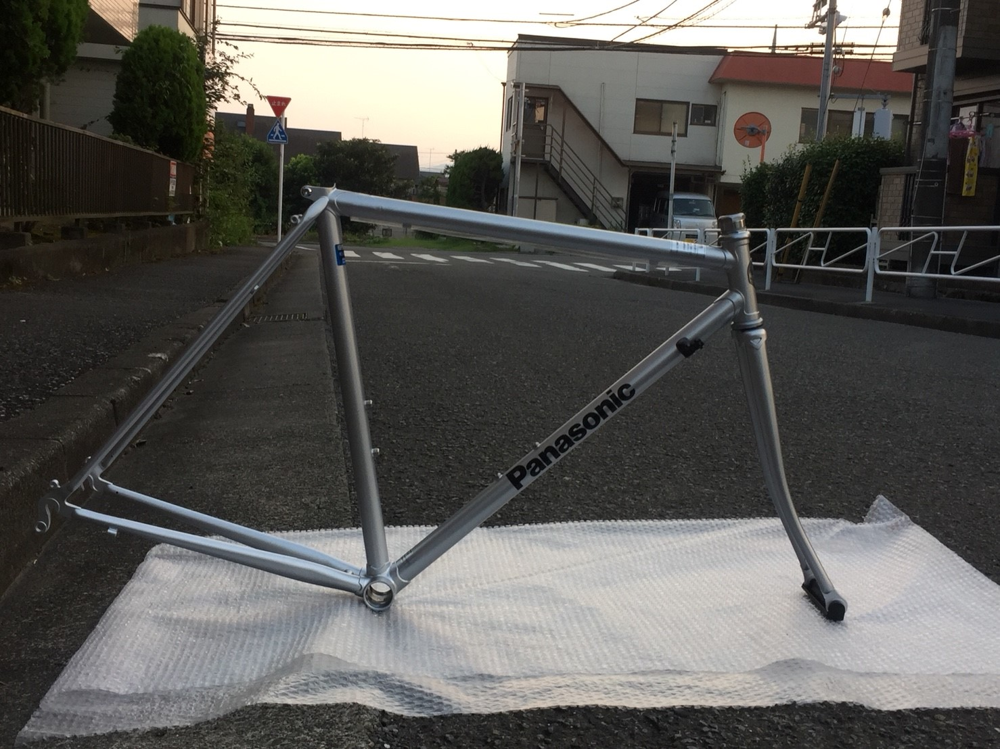
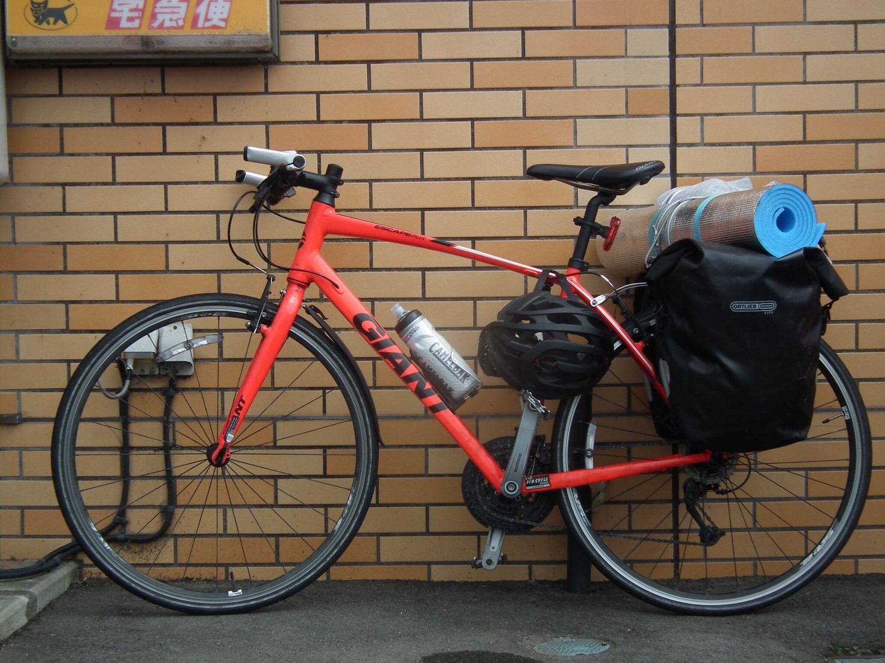
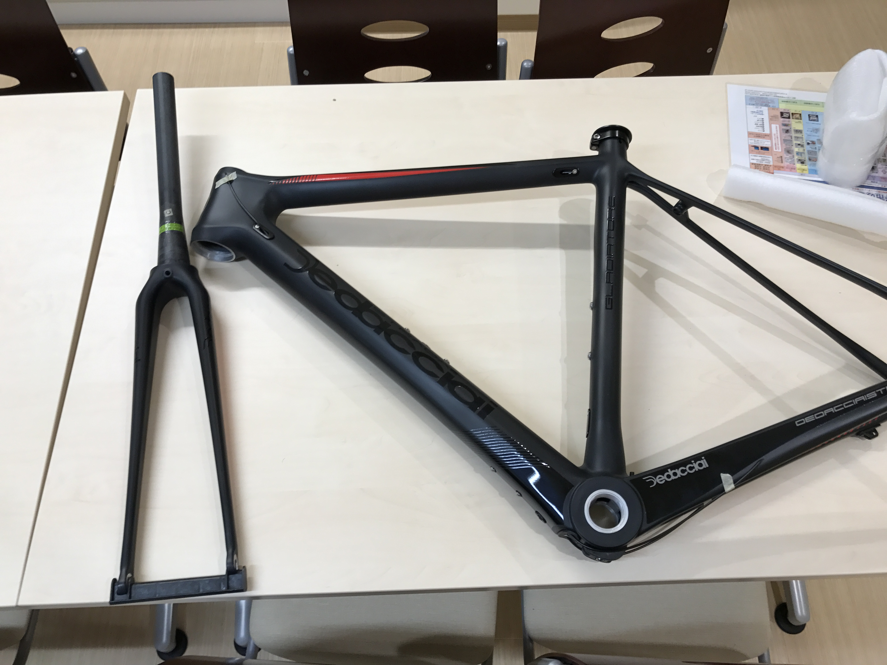

創価大学サイクリング部 合宿の軌跡
創価大学 サイクリング部の合宿の軌跡を残していくよ。自転車について
サイクリングと一言で言っても、それに使う自転車はいろんなものがある。
今回はそれを大きく 4つ に分けて紹介するぞ！
クロモリ自転車 (素材 : クロムモリブデン鋼)

自転車のなかでは最も重量があるが、その強度と拡張性の高さ、そして何と言っても美しい細身のフレームがサイクリストを惹き付ける！
現在はアルミニウムの自転車が一般的だが、自転車を突き詰めて行くと、このクロモリ自転車にたどり着くのだ...!
クラシックな自転車が好きな人や、ご年配のサイクリストから圧倒的な支持を誇っている。
最近では需要が減っていることもあり、なかなか高価になっているのがネックである。
アルミ自転車 (素材 : アルミニウム合金)

現在最もポピュラーな素材でできた自転車。クロモリ自転車よりも軽く、そして強度もそこそこ。
自転車によっては積載量を増やせるので、キャンプツーリングをするサイクリストから人気である。
クロモリと比べて、自転車のパイプが太くなり、また、溶接跡が残った物が多いことから、見た目を重要視する層からは避けられがちである。
最も安価であり、耐久性も問題ないので、初心者から中級車のサイクリストにおすすめされる素材だ！
カーボン自転車 (素材 : カーボン繊維強化プラスチック)

ロードレースで多く使われる素材 『カーボン繊維強化プラスチック』、略して『カーボン』。
最も軽く、剛性も高く、そしてめちゃくちゃ高価。
どうしてもレースで勝ちたい人や、苦しい坂道を攻略したい人が手を出しはじめるブルジョワの戯れである。
フレームの形を自由に造形できる為、空気抵抗を減らす流線形の形をしたものが多いぞ！
チタン自転車 (素材 : チタン合金)
現状乗っている部員がいないため、写真が存在しないぞ！
このチタンフレームこそ自転車界最高のブルジョワの道楽なのである！(めちゃくちゃ高価)
剛性も高く、なおかつクロモリフレームの様な細見で美しいデザインに仕上げられる。
らしい